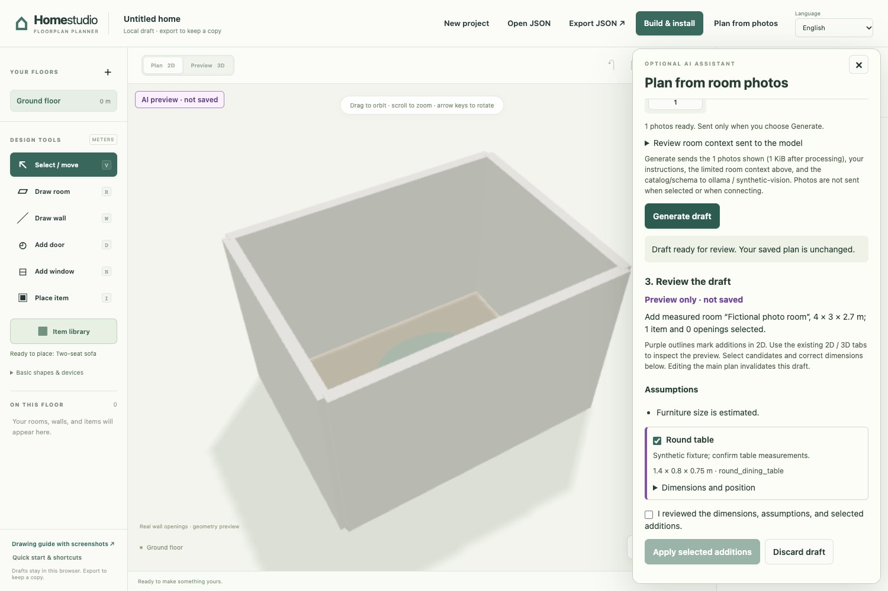

YOUR PHOTOS · YOUR MODEL · YOUR EDITABLE PLAN
Start with a room.
Let AI sketch.
Give Home studio room photos, a few instructions and measurements. Your chosen AI model suggests furniture and openings. You review the draft in the editor before applying it.
Open this optional feature directly in Home Assistant → Home Studio → Plan from photos. Choose your own provider API key or a supported local vision model. Manual drawing and published controls work without AI. A separate desktop companion remains available below.

1. Open Home Studio inside Home Assistant
Install the native integration, restart HA, and open Home Studio from the sidebar as an administrator. Choose Plan from photos in the drawing editor. There is no separate terminal or file transfer in this workflow.
2. Choose where your photos go
Select a provider and enter an exact model ID that supports images, structured text and a context window of at least 32,768 tokens. Larger inputs may need more. Connect with your own API key, or choose a local runtime such as Ollama or LM Studio. The key field is masked and cleared after connection. Your key stays in a user-bound session in HA process memory for at most 30 minutes; it is not written to your project, browser storage or HA configuration. End session clears it. Use HTTPS for remote access to HA.
Cloud mode: when you generate, your HA integration sends your instructions, prepared photos and the relevant room context to your selected provider. Your key is sent to that provider to authenticate. A gateway also receives the request and forwards it to its model host. Provider billing and retention rules apply. Home studio operates no AI relay.
Local mode: use a vision-capable model on a loopback endpoint on the HA host/container. This is not the loopback of your laptop when HA runs on another machine. Disable your runtime's cloud features if you want inference to stay on this machine. Model downloads may still need internet access.
Cloud provider setup → · Ollama, LM Studio and other local runtimes →
3. Add evidence, not guesses
Choose an existing room to furnish, or create a new rectangular room using its measured width, depth and height. Set the new room's position so it fits beside your other rooms. Add a few clear JPEG, PNG or WebP photos and explain what you want to keep or change.
For example: “The room is 4 m wide and 3 m deep. Keep the desk near the window. Put a two-seat sofa against the opposite wall. Leave the door clear.” Photos help identify objects; they do not establish accurate scale. Convert HEIC photos to JPEG first.
4. Review, apply, adjust
Generate a draft, check its assumptions and select the proposed items you want to keep. Preview it in 2D or 3D. Your editable drawing changes only when you choose Apply; the change can be undone. Save draft then stores that drawing in HA. Unsupported objects, invalid dimensions and placements outside the room are rejected instead of silently imported.
Furnishing mode adds objects; it preserves existing furniture and walls. Move, resize or remove existing objects with the usual drawing tools. Repeat room by room. AI does not connect devices or run Home Assistant actions. When ready, link your devices, choose Save draft, and Publish to 3D Home in the same HA page. Open 3D Home from the sidebar to use the published plan.
Optional: use a separate desktop companion
If you prefer to run AI drafting on your computer, extract the home-studio-VERSION.zip source toolkit from the latest release. Open a terminal in its home-studio folder and run:
python3 scripts/serve-ai-planner.pyOn Windows, use py -3 scripts/serve-ai-planner.py. Python 3.10+ is required. Keep the terminal open and use its printed local address. The key then stays in companion process memory. Export accepted JSON and use Open JSON in HA to transfer the design deliberately.
If something does not work
- No AI button? Use an updated native HA integration with a native project and an administrator account. Refresh after upgrading. The hosted editor has no key-entry form. For separate editing, use the address printed by the companion.
- Authentication or model error? Check the provider, exact model ID, API billing and image support. A chat subscription may not include API access.
- Local connection failed? Start the runtime, load a vision model, and use its loopback address. Do not expose the companion to your network.
- Draft rejected? Supply clearer measurements or simpler instructions and generate again. Existing work remains intact.